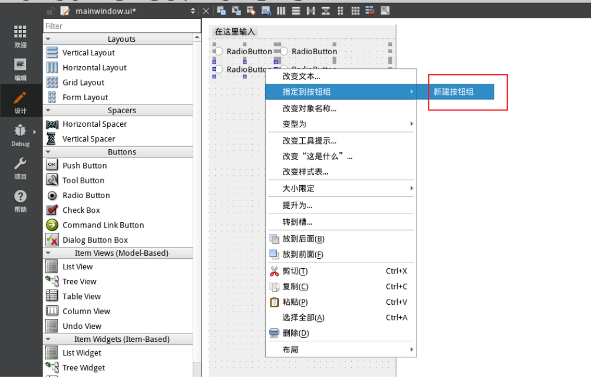
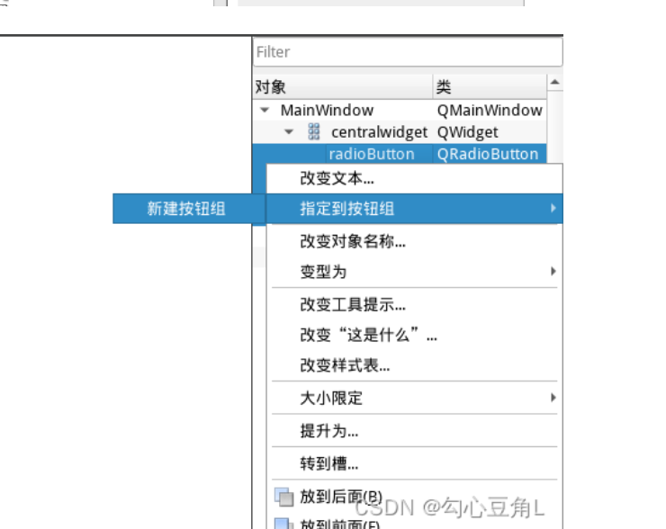

06 QButtonGroup
QButtonGroup
1.用法介绍
QButtonGroup是一个很有用的容器，可以把若干按键（哪种都行）放到一个容器中，有以下几点好处：
- 逻辑分组：
QButtonGroup允许你将相关联的按钮逻辑上分组在一起。这对于处理一组RatioButton或QCheckBox很有用，可以将他们设置成互斥之类的 - 方便管理：通过将按钮添加到
QButtonGroup中，你可以方便地对这些按钮进行统一管理。例如，你可以轻松地获取选中的按钮、设置默认选中按钮、禁用/启用整个按钮组等操作 - 信号传递：
QButtonGroup提供了信号来通知按钮的状态变化，例如当选中的按钮发生变化时，QButtonGroup会发出buttonClicked()信号，在槽函数中，可以获得到底是哪个按键被按下了，这样的话，若干个按键就写一个槽函数就行了，不必每个按键都写个槽函数。
1 | void CChartTest::on_otherGroup_buttonClicked(QAbstractButton *button) |
但是有个关键问题，就是获取到了被按下的按键这个对象后，如果判断他是哪个按键呢？
1.比较简单的方法是直接根据按键中的文本来判断，但是这样的话如果改了UI中的文本的话，要修改的地方比较多。
2.更好的方式：利用Qt元对象系统中的属性机制。为每个按键设置一个自定义属性，在槽函数中由btn这个对象的属性的取值，来定位到底是哪个按键
1 | // 通过按钮动态属性判断按钮操作 |
如果按键的槽函数就是为了设置控件的某个属性，可以直接为各个按键添加一个属性，然后属性的值就设置为控件要设置成的属性：
1 | void CChartTest::on_buttonGroup_buttonClicked(QAbstractButton *button) |
2.创建方式
2.1使用代码创建
1 | QButtonGroup *buttonGroup = new QButtonGroup(this); |
2.2使用Qt Designer创建
 All articles on this blog are licensed under CC BY-NC-SA 4.0 unless otherwise stated.